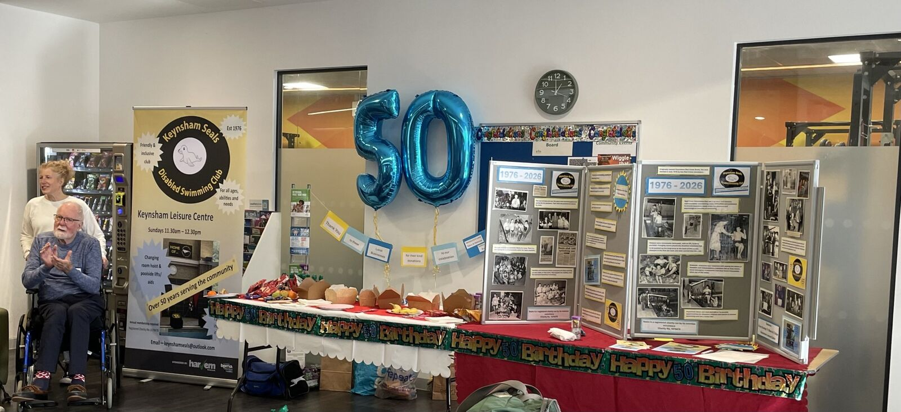
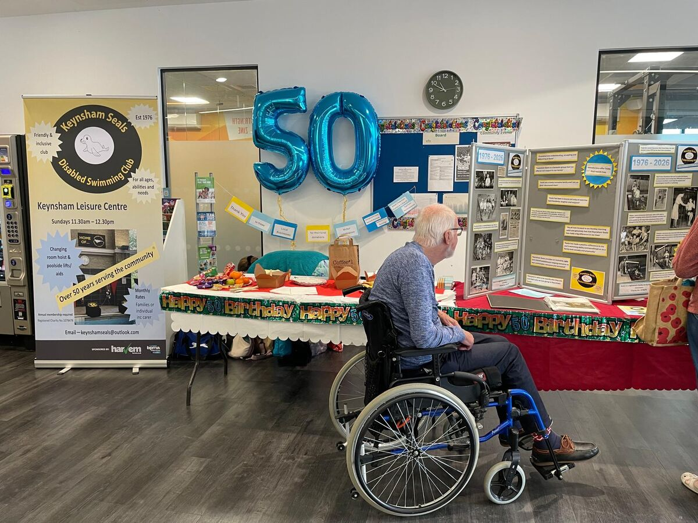
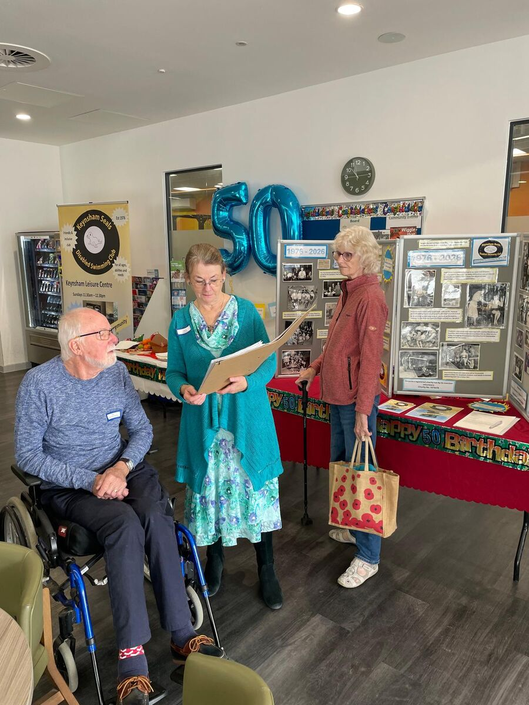
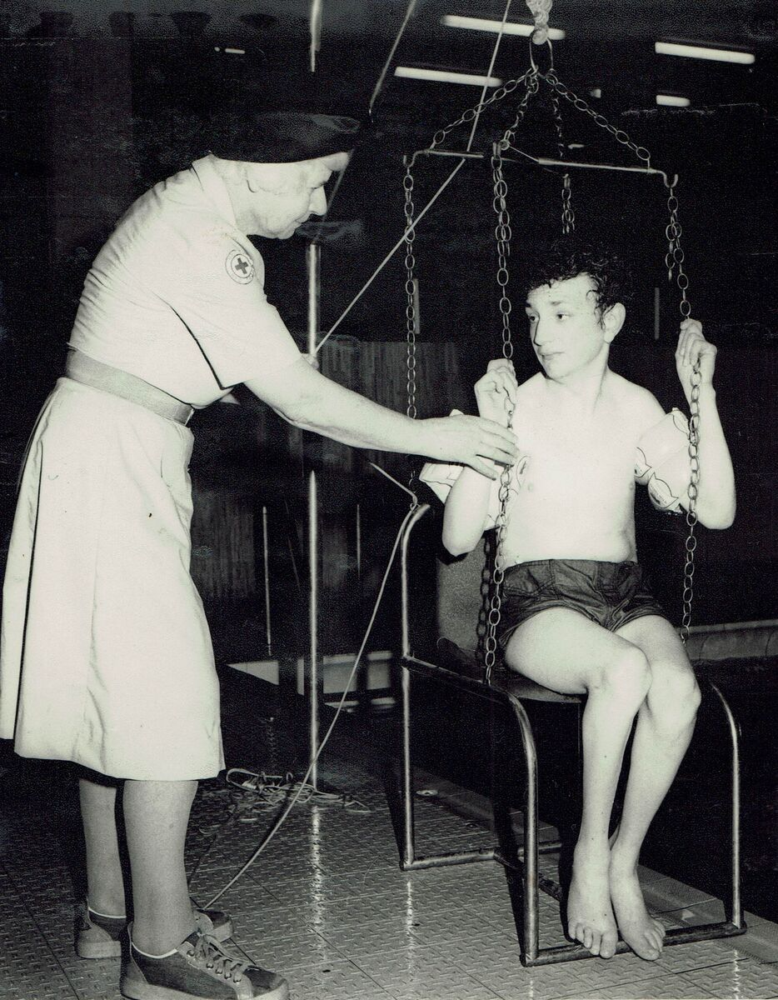
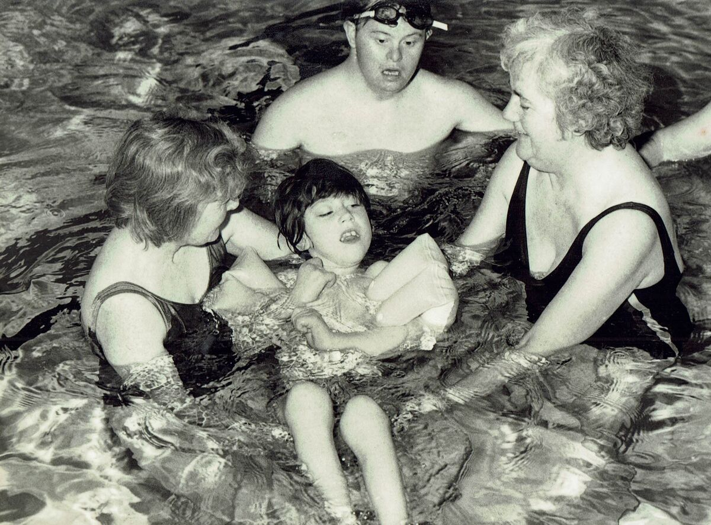
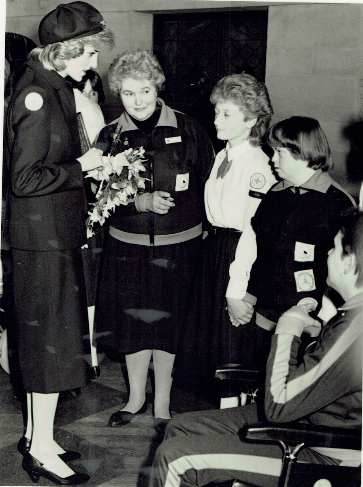

50 years of Keynsham Seals
Half a century of making swimming welcoming for adults and children with disabilities.
Our birthday swim
On Sunday 18 October 2026 we marked our golden anniversary with a birthday celebration at Keynsham Leisure Centre: a swim session from 11:30 for an hour. Thank you to everyone who came along to celebrate with us, and to everyone who has been part of Seals over the last 50 years.
Read the BBC’s story of the day: ‘Lifeline’ swimming group celebrating 50 years.



Our story
Originally named Keynsham Red Cross Seals, the club was started in June 1976 by two Red Cross volunteers. Its aim was to provide opportunities for disabled children and adults to access swimming and live a fuller life.
Those that set it up were trailblazers, commendably overcoming many difficulties and problems to ensure members could enjoy the physical and psychological benefits of swimming. Helpers were immensely dedicated: with no lift, hoist or poolside changing rooms, physically disabled members had to be pushed up the long ramp at the back of the centre, changed in the first aid room and then carried into the pool.
However, everyone was rewarded with seeing the sense of freedom and independence members felt as they swam, many managing movements that they found impossible when out of the water. The club thrived and over the years held swimming galas and parties for its members. Their work was praised and valued by many. Founders and helpers were celebrated, congratulated and rewarded with donations and visits by dignitaries, and most notably a visit from Princess Diana in December 1984, linked to her work with the British Red Cross.
Today, 50 years on, Seals is still going strong. Life is a little easier for helpers and members, with a lift down to the poolside, designated changing rooms and hoist, as well as a motorised pool pod to lower members into the pool. Members still gain so much from the sessions: those with physical or learning disabilities very much relish the independence and freedom in the water.



A community, not just a club
The club provides an essential lifeline for many. There is a very strong sense of community within the Seals members. Families and individual adults and carers all enjoy catching up each week as they swim; they support one another, have fun and build beneficial friendships.
“We really work together as a community, and a lot of us special need parents absolutely get it,” says Rachel. Members check up on each other and make sure new members feel welcome and supported.
For Francesca, whose son Freddie has been swimming with Seals for about a year, it is somewhere he can feel comfortable and free to be himself: “It’s made not only a positive difference to my son’s swimming ability but benefitted us as a family both socially and physically.”